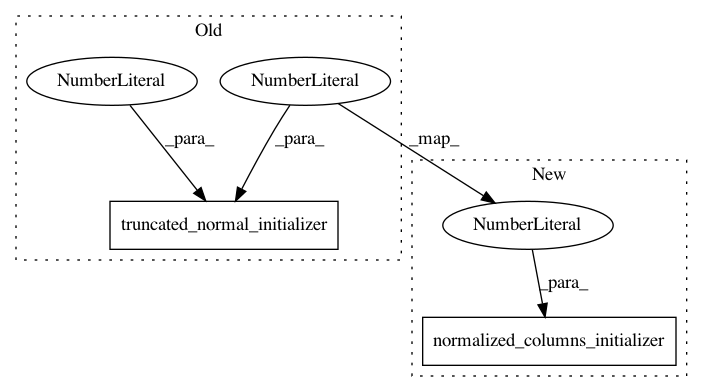

6d79b5a5f133e16dbffa2bbd55463659bbbc0f41,agents/a2c.py,ActorCriticNetworkDiscrete,__init__,#ActorCriticNetworkDiscrete#Any#Any#Any#,23
Before Change
inputs=self.states,
num_outputs=self.n_hidden,
activation_fn=tf.tanh,
weights_initializer=tf.truncated_normal_initializer(mean=0.0, stddev=0.02),
biases_initializer=tf.zeros_initializer(),
scope="L1")
After Change
inputs=self.states,
num_outputs=self.n_hidden,
activation_fn=tf.tanh,
weights_initializer=normalized_columns_initializer(0.01),
biases_initializer=tf.zeros_initializer(),
scope="L1")
In pattern: SUPERPATTERN
Frequency: 3
Non-data size: 2
Instances
Project Name: arnomoonens/yarll
Commit Name: 6d79b5a5f133e16dbffa2bbd55463659bbbc0f41
Time: 2018-02-05
Author: arno.moonens@outlook.com
File Name: agents/a2c.py
Class Name: ActorCriticNetworkDiscrete
Method Name: __init__
Project Name: arnomoonens/yarll
Commit Name: 31135498a9af1940c3231d9d0a8b7d8c0fedf887
Time: 2018-03-02
Author: arno.moonens@gmail.com
File Name: misc/network_ops.py
Class Name:
Method Name: mu_sigma_layer
Project Name: arnomoonens/yarll
Commit Name: 6d79b5a5f133e16dbffa2bbd55463659bbbc0f41
Time: 2018-02-05
Author: arno.moonens@outlook.com
File Name: agents/a2c.py
Class Name: ActorCriticNetworkContinuous
Method Name: __init__